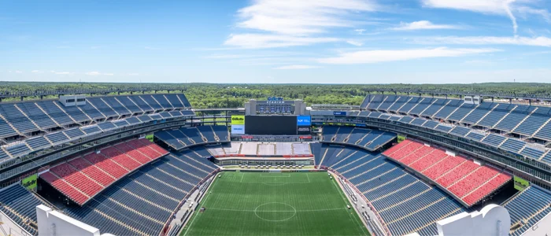
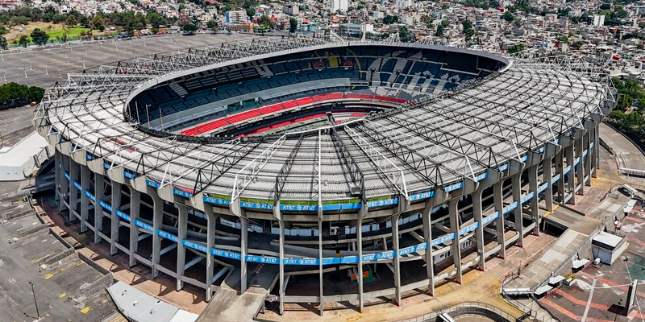
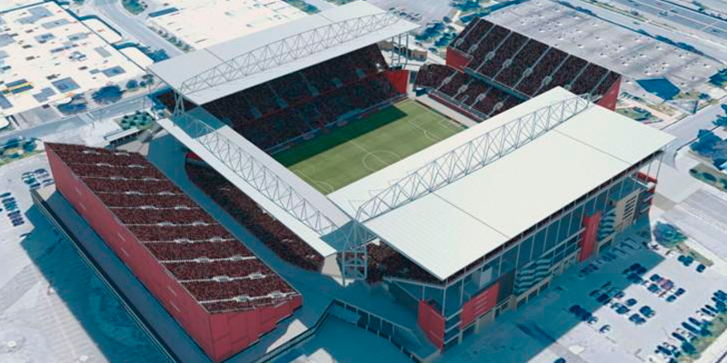

A Copa do Mundo FIFA 2026 será o maior torneio de futebol da história, com 48 seleções disputando o título pelo mundo pela primeira vez. Os jogos acontecerão nos Estados Unidos, México e Canadá, três países que juntos receberão o mundo em 16 cidades-sede.
seleções
cidades
países-sede
jogos

País sede
Principal sede da Copa 2026, os EUA receberão a maior parte dos jogos, incluindo a grande final. São 11 cidades espalhadas pelo país.

País sede
O México se torna o primeiro país a sediar três Copas do Mundo. Cidade do México, Guadalajara e Monterrey receberão os jogos.

País sede
Estreando como sede de Copa, o Canadá receberá jogos em Vancouver, Toronto e a capital Ottawa.